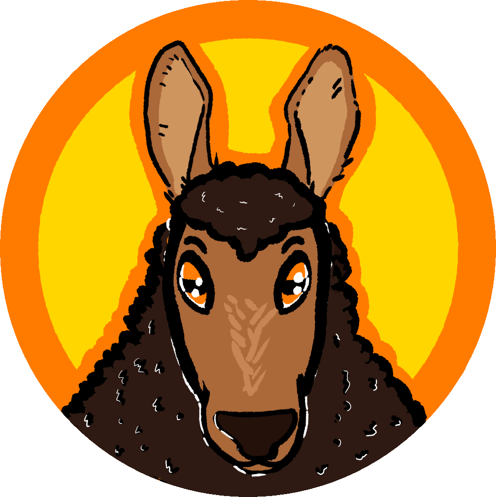

My Projects
I'm a passionate software developer that's always eager to explore new technologies and ideas. I have specialized in interactive audio-visual development for mobiles platforms. However, I am well versed in developing desktop, web, and cloud applications. I find joy in being able to explore new ideas and problems. Additionally, I regularly start projects to learn new skills. I've included a selection of these projects in the sidebar.
In 2019, I led a team of 3 other students in building a dynamic AR picture book system. It featured real-time feedback for words the reader read correctly, read incorrectly, or skipped over. It required combining augmented reality (AR), automatic speech recognition (ASR), and natural language process (NLP). We had a week to build and record our final demonstration. Our work had managed to leave a meaningful impression on our university. So much so, our college used it to showcase what other highly motivated students could find themselves creating at the school.
This work would later evolve into my thesis project. My research explored the realm of advanced human-AI teaming. Utilizing my previous AR experiences, I led the development of a training simulation based around a virtual expert in Autism Spectrum Disorder. The goal of this project was to take players through a virtual office session between them and a student with ASD. You can read all the details in my paper Human-AI Teaming for Dynamic Interpersonal Skill Training.